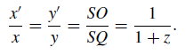
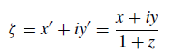

Hopf fibration
To determine the value of the quantum state |ψ〉, set the values of the polar and azimuth angles
either using the GUI in the upper right corner of the program, or using the keys located
under the GUI. The intersection of a red-colored straight line with a horizontal plane
sets the value of complex coordinates. This value is (ζ = ...) you can see it
at the very bottom of the left part of the program window.
Bloch sphere and Hopf circles rotation - left mouse button drag
Bloch sphere and Hopf circles size - middle mouse button drag, or mousewheel
Bloch sphere and Hopf circles movement on screen - right mouse button drag
A short video
that shows how to control this program.
This site shows an interactive visualization of the Hopf fibration or Hopf bundle.
The corresponding program was created on the basis of the Riemann-Bloch sphere
and the stereographic projection of points belonging to this sphere onto a Complex plane.
When visualizing the Hopf fibration, each point of this sphere is displayed
as a circle on the display screen. These circles are called either Hopf circles,
or Clifford parallels, or Villarso circles. Both Hopf, Clifford and Villarso
have left their mark on the study of this field of geometry.
Quantum rotations were used to move points along the Riemann-Bloch sphere, and,
consequently, circles on the torus. Quantum rotations are discussed in detail on this
site
and another
site.
The work area of the program is divided into four parts.
On the left side of the workspace is the Bloch-Riemann sphere. The red arrow on this sphere shows the Bloch vector.
Each Bloch vector on the sphere corresponds to a quantum state vector .
By specifying the Bloch vector (coordinates θ and φ on the sphere), we obtain (after appropriate calculations)
the quantum state vector |ψ〉, the value of which is displayed under the Bloch sphere.
There is a control panel on the right side of the workspace. The coordinates θ and φ of the Bloch vector
on the Bloch sphere can be set in the control panel using the polar_electron and azimuth_electron
parameters, respectively. The most frequently used values of these parameters can also be set using the buttons,
which are also located on the right side of the program workspace.
The program provides for the possibility of rotating the Bloch vector around a predetermined axis of rotation.
The position of the rotation axis can be set using the polar_axis and azimuth_axis parameters
in the control panel located on the right side of the program workspace.
When you select any of the values of these parameters, the axis of rotation on the Bloch sphere
appears automatically. The most frequently used values of the parameters used to set the position
of the rotation axis can also be set using the buttons, which are also located on the right side
The middle part of the working area of the program is devoted to the output of images
corresponding to Hopf bundles. The type of Hopf fibration is given by the position
of the Bloch vector on the Riemann-Bloch sphere. In the right part of the work area
of the program there is a button "Erase Hopf circles" which is designed to erase the
circles that make up the Hopf fibration. Also on the right side of the program's workspace
are three buttons "1", "2" and "3" ("Thick lines"), which set the thickness
of the circles (each Hopf fibration is a circle called a Hopf circle).
The "Axes" switch enables/disables the display of coordinate axes in the middle part
of the working area of the program (in which Hopf circles are visualized).
At the very bottom of the program's workspace there is a row of buttons designed
to rotate the Bloch vector on the Riemann-Bloch sphere:
The Riemann-Bloch sphere is the basis for visualizing the Hopf fibration
In order to understand how the Hopf fibration appears, it is first necessary to deal with the Riemann-Bloch sphere
and the stereographic projection of points lying on this sphere onto a complex plane.
When visualizing the Hopf fibration, each point on this sphere is displayed as a circle, which is called a "Hopf circle".
Each Hopf circle is also called a "layer".
Just in case, we note that the Riemann-Bloch sphere is a purely mathematical construction
and should not be considered as a geometric object in the usual visual sense.
On the left side of the workspace, the program displays the Riemann-Bloch sphere. In general, the
Hopf fibration is constructed based on a four-dimensional topology in which the Riemann-Bloch sphere
is usually called the Riemann sphere. But since we will visualize the Hopf fibration in relation
to the quantum mechanics of electron spin, the Riemann-Bloch sphere is usually called simply
the Bloch sphere here, since Bernhard Riemann is mainly a mathematician, and Felix Bloch is a physicist.
However, both in pure mathematics and in physics, the same methods are used to describe the Hopf fibration.
Note also that when describing the state of polarization of light, the Riemann-Bloch sphere
is usually called the Poincare sphere.
In quantum mechanics, the Bloch sphere is a geometric representation of a quantum state in a two-level system,
which is called a qubit. The qubit is the simplest quantum mechanical system and generalizes the classical bit.
Since a qubit is a two–level system, it can have two possible values of 0 and 1:
The main feature of a qubit compared to a classical bit is the ability to have superposition states of values 0 and 1.
That is, a qubit can be in an arbitrary superposition of two basic states |0〉 and |1〉.
The mathematical description of the qubit is presented in terms of the sum of two basis vectors weighted
by (complex) amplitudes. This corresponds to a two-dimensional vector with complex coefficients a and b,
which is an element of the vector space C2. Such a superposition can be interpreted as an interference
of two possibilities. The quantum state of a qubit is described as
|ψ〉 = a⋅|0〉 + b⋅|1〉
Thus, the state vector |ψ〉 is determined by the sum of two vectors a⋅|0〉 and b⋅|1〉. In this formula,
|0〉 and |1〉 are the basis vectors, and the coefficients a and b in front of the basis vectors
are generally complex numbers. These two numbers are called probability amplitudes.
The state vector |ψ〉 is determined by the sum of the two vectors
|ψ〉 = a⋅|0〉 + b⋅|1〉
In this formula, |0〉 and |1〉 are the basis vectors. The coefficients a and b in front
of the basis vectors are generally complex numbers. These two numbers are called probability amplitudes.
As you know, any complex number can be written in exponential form. The numbers a and b in exponential form look like this:
a = ra⋅eiφa
b = rb⋅eiφb
The state vector |ψ〉 in this case will take the following form:
|ψ〉 = ra⋅eiφa|0〉 + rb⋅eiφb|1〉
Let's introduce the following notation
φ = φb-φa
and therefore,
φb = φ + φa
Then the previous expression for the state vector |ψ〉 can be rewritten in this form
|ψ〉 = ra⋅eiφa|0〉 + rb⋅eiφb|1〉 =
ra⋅eiφa|0〉 + rb⋅eiφ⋅eiφa|1〉 =
eiφa(ra|0〉 + rb⋅eiφ|1〉)
For the state vector, only the ratio in which the probability amplitudes are located between each other matters.
Therefore, it is possible to painlessly multiply both composing vectors |ψ〉 by the same number
equal to e-iφa.
After this multiplication, we get the following expression for |ψ〉
|ψ〉 = ra⋅|0〉 + rb⋅eiφ⋅|1〉
Note that the state vector |ψ〉 can be adjusted to any number - real, complex
or purely imaginary - the physical meaning will not change from this.
The angle φa is called the "global phase". Since the global phase appears
only as a result of mathematical transformations, it has no physical meaning and therefore
can be ignored (but only in quantum mechanical calculations). And when visualizing the Hopf fibration,
the global phase plays a fundamental role.
Unlike the global phase, the angle φ has a direct physical meaning,
which determines the phase difference between the components of the state vector.
The angle φ is called the "local phase". The local phase plays an important role
in the interference of electrons.
The probability amplitudes a and b are usually normalized to 1. Therefore, the sum of
ra2 + rb2 should also be equal to 1:
ra2 + rb2 = 1
Based on this, it is convenient to enter the following normalization (because always
cos2+sin2=1)
ra = cos(θ/2)
rb = sin(θ/2)
Then the expression for the state vector |ψ〉 will take the form
ra = cos(θ/2)
rb = sin(θ/2)
Sphere S3 in C2
A sphere S3 of a unit radius in four-dimensional space R4
is a set of points located at a unit distance from the origin. If in this space we consider the real coordinates
x1, y1 and x2, y2, then this sphere
will be given by the equation
x12 + y12
+ x22 + y22 = 1
We can assume that in the expression |ψ〉 = a⋅|0〉 + b⋅|1〉 the values of the complex quantities
a and b are defined as follows:
a = x1 + i⋅y1, b = x2 + i⋅y2.
Then the sphere S3 will be represented as a set of complex pairs (a, b).
Note that |a|2 + |b|2 = 1.
Thus, we will get an image of our sphere S3 in a two-dimensional
complex space C2.
The entire three-dimensional sphere S3 is filled with circles,
and each such circle is associated with a point on a two-dimensional sphere S2
- the Riemann-Bloch sphere.
No two circles intersect. This partition of a three-dimensional
sphere S3 on a circle is called a Hopf fibration.
Let's turn to the qubit again.
Suppose we rotate our qubit |ψ〉 by some angle γ (global phase).
Just looking at this qubit by itself, this phase is physically unobservable,
since the probabilities do not change, i.e. |ψ〉 ∼λ⋅|ψ〉 = eiγ⋅|ψ〉
(it is obvious that the module |λ| = |eiγ| = 1).
However, to visualize the Hopf circles, we will be interested in exactly the entire value
eiγ⋅|ψ〉, in which the angle γ will vary from 0° to 360°
thereby defining a circle (this circle is often called a Hopf circle).
Despite the fact that the global phase has no physical meaning (as they say in all textbooks
on quantum mechanics), in mathematics, using it you can get very beautiful results.
But it turns out not only in mathematics, but also in some sections of modern physics.
Despite the fact that the global phase has no physical meaning (as they say in all textbooks on quantum mechanics),
in mathematics, using it you can get very beautiful results.
But it turns out not only in mathematics, but also in some sections of modern physics.
Why the Hopf fibration based on the global phase (which has no physical meaning in quantum mechanics)
is used in physics, I do not know. But by the end of the 1970s, it became clear to some well-known scientists
that the Hopf bundle plays a fundamentally important role in gauge approaches to quantum field theory.
In addition, in fact, as the core of the entire model, the Hopf bundle appeared in Roger Penrose's theory
of twistors, and later in a number of other approaches to the theory of quantum gravity.
Thus, the three-dimensional sphere S3 is embedded in a four-dimensional
Euclidean space R4 identified with a two-dimensional complex space
C2(a, b), where a and b are complex numbers.
Next, let's consider the map of a p three-dimensional sphere
S3on a two-dimensional sphere S2 - the Bloch sphere.
p: S3 ⟶ S2.
For this mapping, we take a point from a three-dimensional sphere S3 with coordinates (a, b)
and using the p mapping, we will map this pair of complex numbers into one complex number λ = a/b:
p: (a, b) ⟶ λ = a / b
We will consider the point λ = a/b to be a point on the complex line С1.
But the complex line С1 is simultaneously a two-dimensional plane R2.
Since in general the complex number b can turn to 0, then it is necessary to add to С1
an infinitely distant point. That is, to replenish the two-dimensional plane R2 with one infinitely distant point.
As a result of these actions, a two-dimensional sphere S2 is obtained.
On this sphere, all points λ = a/b are finite, but one point is located at infinity. Let this infinitely distant point
be located at the south pole of a two-dimensional sphere S2. As a result of all these manipulations,
a three-dimensional sphere S3 was mapped onto a two-dimensional sphere S2.
Here is a drawing showing the stereographic projection of a unit sphere
from the south pole S to the plane z = 0. The stereographic projection maps
the northern hemisphere to the area lying inside the unit circle.
The southern hemisphere is mapped to an area outside the unit circle.
The equator coincides with the unit circle.

Let O(0, 0, 0) be the center of the sphere, N(0, 0, 1) be the north pole, and S(0, 0, -1) the south pole.
Let P'(x', y', 0) be the intersection of a straight line SP with the equatorial plane z = 0,
andQ(0, 0, z) – projection P(x, y, z) on the z axis. The point P'
is called the stereographic projection of the point P.
From similar triangles SOP' and SQP we find:

Now let's introduce a complex variable in the plane z = 0ζ

In the visualization program, the complex variable ζ is denoted in the standard way accepted for
complex numbers ζ = z = x + iy. In this expression, x and y are coefficients before
the real and imaginary parts of the variable z, and no longer spatial coordinates (x, y, z).
In the visualization program, the complex plane is located on the spatial plane z = 0.
The complex number ζ = z = x + iy is located purely geometrically as a point P' intersection
a projecting line PS with a plane z = 0.
The representation of the state vector on the Bloch sphere is made in such a way that it is possible to display
the true size of the angles θ, rather than their half size θ/2.
But it should be remembered that in fact the basis vectors |0〉 and |1〉 are orthogonal vectors
despite the fact that they are shown lying on the same straight line. This is nothing more than just a convention adopted
specifically for the representation of state vectors on the Bloch sphere.
Displaying Hopf circles on the screen
Let's emphasize that each point on the sphere the Riemann-Bloch
is displayed as a separate Hopf circle.
However, we recall once again that the Riemann-Bloch sphere is a purely mathematical construction and therefore it is impossible to
draw a circle at any point of this sphere. Everything looks a little more complicated.
To visualize a Hopf circle, first of all you need to find the position of the center of this circle and its radius.
To do this, draw a straight line, as shown in the following figure, and find the intersection point of this straight line with the OXY plane
, which is designated in the program as "Complex plane". We also need to set
some scale in which we will display the circles. It is easy to understand that there will be
only one circle above the North pole - the Bloch vector directed from point O to point N (North pole) at any
value of the parameter value azimuth_electron (geographic longitude) will always be directed vertically upwards.
Therefore, we can take the size ON = OA as the unit radius of the Hopf circle. All other radii of the circles
will be measured relative to this radius (the main thing is to maintain the proportionality of the radii of all Hopf circles).
Thus, only one circle will be located above the north pole of the Riemann-Bloch sphere.
If we replace the geograph (parameter polar_electron), then in fact new Riemann-Bloch
circles will appear lying on the corresponding parallel of this sphere. In the following figure, each
point on the Riemann-Bloch sphere corresponds to one circle. To designate the parameter polar_electron
equal to 120°, this entire parallel will be filled with Hopf circles - "layers".
The totality of all the circles on this parallel forms a torus. To get this drawing - after the launch
programs set polar_electron) = 120° when connected to the inside of the program.
I think that press lightly, turning Z+ over and over again, and you will see a circle in front of you.
If you want to get the value polar_electron) = 180° - all the Hopf circles turn into one vertical straight line.

And here's what images formed by Hopf circles look like at parameter values
polar_electron) respectively equal to 30°, 60° and 90°:

It can be seen from the screenshot that with an increase in the polar_electron parameter, the tori "swell". And with
the value of the parameter polar_electron = 180°, instead of a torus, we will see a vertical straight line.
There are many tori formed at once when rotating around the Z axis:

The thickness of the tube of such a torus varies depending on the location of the latitude between the horizontal
plane and the point from which the projection takes place (the south pole of the sphere).
As the latitude shifts from the projection point, the torus passes through all intermediate states
between the two limits. In one limit, becoming thinner and thinner, it degenerates
into a circle (polar_electron = 0°).
In the opposite case, the torus thickens to a state where its "hole" degenerates into a straight line
(on the Bloch sphere, in this case, the parameter polar_electron = 180°).
In other words, Hopf circles fill the entire space with nested tori.
But the most important thing here is this. Each point of the Bloch sphere located on the line of latitude
on the surface of the torus corresponds to a circle line capturing the "doughnut hole"
and obliquely encircling the pipe. Just as a multitude of points fills the entire circumference of latitude,
similarly, a set of such rings, hooked to each other, completely covers the surface
of the corresponding torus.
If you rotate the Bloch vector around the axis Z in a spiral mode (you need to install check-box),
then you can see the following picture:
The Hopf circles that make up the torus are also called Villarso circles
after the French mathematician and astronomer Yvon Villarso, who noticed
that on the torus, in addition to the two standard families of circles, there are two other families
of circles. This is a pair of circles obtained by cutting the torus of rotation with a diagonal
tangent plane passing through the center of the torus:
All Villarso circles on the torus turn out to be interlocked with each other,
and in the topological context of knot theory, this configuration is called the "Hopf bundle"
and represents the simplest non-trivial (that is, unconnectable) knot. Here's what two hooked Hopf circles
look like in close-up:

However, the principle of duality is sometimes used in geometry. For example, between points and straight lines.
In our case, let's try to match each circle with a separate straight line.
Let's create a visualization program so that the Villarso circles (Clifford parallels)
turn into straight lines. This will result in a hyperboloid of rotation:

You can try to take some other geometric objects instead of circles and straight lines and match them
with points on the Riemann-Bloch sphere. The resulting visualizations will not make any deep sense at all.
But the resulting images themselves may be of interest - you will get bundles of geometric objects
that are quite difficult to obtain in another way. Any two of the circles on the torus are interconnected and
to create a program depicting this coupling, it is difficult to come up with another option than the one proposed
for constructing the Hopf bundle.
The following screenshot shows, so to speak, the "bundles" obtained
when, instead of Hopf circles, a square, a pentagon and a heptagon are taken:
&
Several buttons have been added to the program interface to select geometric objects:
However, we are not only interested in rotation around the Z axis.
This is what individual Hopf circles look like (from a set of such circles
consist of tori) with the value of the parameter azimuth_electron) = 0° and various values
polar_electron parameter. This screenshot shows rotation no longer around the Z axis,
and around the Y axis:
When rotating around the Y axis, an asymmetric torus was obtained:

When rotating around the X-axis, an asymmetric torus is also obtained:
Rotation can be performed around an arbitrarily directed N axis in space. This
is how two tori obtained by rotating around two different axes look like.
In the screenshot, we see not only the hooked Hopf circles, but also two hooked asymmetric tori:

And this is what four tori look like - rotation
implemented around four different axes:

In this visualization, the Riemann-Bloch sphere and vector rotations play a main role in the Hopf fibration.
As mentioned above, each point on the sphere corresponds to a single Hopf circle.
With each rotation of the Bloch vector, we set a new point on the sphere.
Rotations on the Riemann-Bloch sphere are quantum rotations.